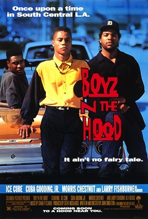

| Name | Images | Description | Duration | The Fast and The furious: Tokyo Drift |  |
The Fast and the Furious: Tokyo Drift is a 2006 action film directed by Justin Lin and written by Chris Morgan. It is the standalone sequel to The Fast and the Furious (2001) and 2 Fast 2 Furious (2003) and is the third main installment in the Fast & Furious franchise. It stars Lucas Black and Bow Wow. In the film, car enthusiast Sean Boswell (Black) is sent to live in Tokyo with his estranged father and finds solace exploring the city's drifting community. |
1h 44m |
|---|---|---|---|
| Creed III |  |
Creed III is a 2023 American sports drama film directed by and starring Michael B. Jordan (in his directorial debut) from a screenplay by Keenan Coogler and Zach Baylin. It is the sequel to Creed II (2018), the third in the Creed film series, and the ninth overall in the Rocky film series. It also stars Tessa Thompson, Jonathan Majors, Wood Harris, Florian Munteanu and Phylicia Rashad. In the film, the accomplished and recently retired boxer Adonis Creed (Jordan) comes face-to-face with his childhood friend and former boxing prodigy Damian Anderson (Majors). |
1h 57m |
| Friday |  |
Friday is a 1995 American buddy comedy film directed by F. Gary Gray and written by Ice Cube and DJ Pooh. The first installment in the Friday trilogy, the film stars Ice Cube, Chris Tucker, Nia Long, Bernie Mac, Tiny "Zeus" Lister Jr., John Witherspoon, Regina King, and Anna Maria Horsford. Set in South Central Los Angeles, it follows unemployed friends Craig Jones and Smokey, who face troubles after becoming indebted to a local drug dealer. |
1h 30m |
| Coach Carter | Coach Carter is a 2005 American biographical teen sports drama film starring Samuel L. Jackson and directed by Thomas Carter (no relation). It is based on the true story of Richmond High School basketball coach Ken Carter, who made headlines in 1999 for suspending his undefeated high school basketball team due to poor academic results.[2][3][4] The story was conceived from a screenplay co-written by John Gatins and Mark Schwahn. The ensemble cast features Rob Brown, Channing Tatum, Debbi Morgan, Robert Ri'chard and singer Ashanti. |
2h 16m | |
| The Irishman |  |
The Irishman (subtitled onscreen as I Heard You Paint Houses) is a 2019 American epic gangster film directed and produced by Martin Scorsese and written by Steven Zaillian; it is based on the 2004 nonfiction book I Heard You Paint Houses by Charles Brandt. It stars Robert De Niro, Al Pacino, and Joe Pesci, with Ray Romano, Bobby Cannavale, Anna Paquin, Stephen Graham, Stephanie Kurtzuba, Jesse Plemons, and Harvey Keitel in supporting roles. The film follows Frank Sheeran (De Niro), a truck driver who becomes a hitman involved with mobster Russell Bufalino (Pesci) and his crime family. Sheeran works at times for the powerful Teamster Jimmy Hoffa (Pacino). |
3h 29m |
| Pirates of the Caribbean: Dead Men Tell No Tales |  |
Pirates of the Caribbean: Dead Men Tell No Tales (released internationally as Pirates of the Caribbean: Salazar's Revenge) is a 2017 American swashbuckler fantasy film directed by Joachim Rønning and Espen Sandberg and written by Jeff Nathanson, from a story by Nathanson and Terry Rossio. Produced by Jerry Bruckheimer and distributed by Walt Disney Studios Motion Pictures, the film is the standalone sequel to On Stranger Tides (2011) and the fifth installment in the Pirates of the Caribbean film series. It stars Johnny Depp, Javier Bardem, Geoffrey Rush, Brenton Thwaites, Kaya Scodelario, and Kevin McNally. |
2h 9m |
| Black Adam |  |
Black Adam is a 2022 American superhero film based on the DC character of the same name. Produced by New Line Cinema, DC Films, Seven Bucks Productions, and FlynnPictureCo. and distributed by Warner Bros. Pictures, it is a spin-off to Shazam! (2019) and the 11th film in the DC Extended Universe (DCEU). The film was directed by Jaume Collet-Serra from a screenplay by Adam Sztykiel, Rory Haines, and Sohrab Noshirvani. It stars Dwayne Johnson as Teth-Adam / Black Adam, an ancient superhuman who is released from his magic imprisonment by a group of archeologists to free the nation of Kahndaq from the crime syndicate Intergang, whose local leader plans to obtain an ancient relic called the Crown of Sabbac to take control of the nation. Aldis Hodge, Noah Centineo, Sarah Shahi, Marwan Kenzari, Quintessa Swindell, and Pierce Brosnan appear in supporting roles. |
2h 5m |
| Rambo: Last Blood | Rambo: Last Blood[a] is a 2019 American action film directed by Adrian Grünberg. The screenplay was co-written by Matthew Cirulnick and Sylvester Stallone, from a story by Dan Gordon and Stallone, and is based on the character John Rambo created by author David Morrell for his novel First Blood. A sequel to Rambo (2008), it is the fifth installment in the Rambo franchise and stars Stallone as Rambo, alongside Paz Vega, Sergio Peris-Mencheta, Adriana Barraza, Yvette Monreal, Genie Kim aka Yenah Han, Joaquín Cosío, and Oscar Jaenada. In the film, Rambo travels to Mexico to save his adopted niece, who has been kidnapped by a Mexican cartel and forced into prostitution. |
1h 40m | |
| Crows Zero | Crows Zero (クローズZERO, Kurōzu Zero), also known as Crows: Episode 0,[2] is a 2007 Japanese action film based on the manga Crows by Hiroshi Takahashi. The film was directed by Takashi Miike with a screenplay by Shōgo Mutō, and stars Shun Oguri, Kyōsuke Yabe, Meisa Kuroki, and Takayuki Yamada. The plot serves as a prequel to the manga, and focuses on the power struggle between gangs of students at Suzuran All-Boys High School.[3] The film was released in Japan on October 27, 2007. It has spawned two sequels, Crows Zero 2 and Crows Explode, as well as a manga adaptation released November 13, 2008. |
2h 10m | |
| Boyz n the Hood |  | Boyz n the Hood is a 1991 American coming-of-age crime drama film written and directed by John Singleton in his feature directorial debut.[2] It stars Cuba Gooding Jr., Ice Cube, Nia Long, Morris Chestnut, Tyra Ferrell, Laurence Fishburne, Regina King, and Angela Bassett. Boyz n the Hood follows Tre Styles (Gooding Jr.), who is sent to live with his father Furious Styles (Fishburne) in South Central Los Angeles, surrounded by the neighborhood's booming gang culture. The film's title is a double entendre: a play on the term boyhood and a reference to the 1987 Eazy-E rap song of the same name, written by Ice Cube. |
1h 52m |
| Django Unchained |  |
Django Unchained is a 2012 American revisionist Western[5] film written and directed by Quentin Tarantino, starring Jamie Foxx, Christoph Waltz, Leonardo DiCaprio, Kerry Washington, and Samuel L. Jackson, with Walton Goggins, Dennis Christopher, James Remar, Michael Parks, and Don Johnson in supporting roles. Set in the Old West and Antebellum South, it is a highly stylized, heavily revisionist tribute to Spaghetti Westerns, in particular the 1966 Italian film Django by Sergio Corbucci (the star of which, Franco Nero, has a cameo appearance). The story follows an enslaved black man who trains under a German bounty hunter, with the ultimate goal of reuniting with his long-lost wife. |
2h 45m |